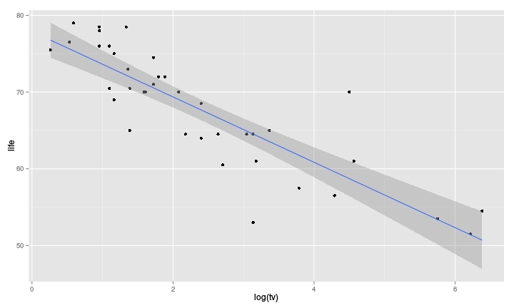

pandoc is then used to transform the markdown file into the required format# Simple Example
This is a very simple document; here is word in *italics*,
or in **bold**.
Lists are also easily created, e.g.,
- item 1
- item 2
- item 3
`in-line code` is obtained with a back-tick.
The following
a header | a second header
---------|----------------
cell 1 | cell 2
cell 3 | cell 4
is a table
This is a very simple document; here is word in italics, or in bold.
Lists are also easily created, e.g.,
in-line code is obtained with a back-tick.
The following
| a header | a second header |
|---|---|
| cell 1 | cell 2 |
| cell 3 | cell 4 |
is a table
# Header 1
## Header 2
### Header 3- Item 1
- Item 2
+ Item 2a
+ Item 2b1. Item 1
2. Item 2
3. Item 3
+ Item 3a
+ Item 3bLinks
http://www.uni-ulm.de/mawi/statistics.html
[Our institute](http://www.uni-ulm.de/mawi/statistics.html)http://www.uni-ulm.de/mawi/statistics.html
Local file
On the internet
Inline equation
$Y = \beta_0 + \sum_{i = 1}^p \beta_i Z_i$which gives
Display equations
$$Y = \beta_0 + \sum_{i = 1}^p \beta_i Z_i$$which gives
Code chunks are delimited with
```{r }
a <- 1
```A chunk name can be given as well as options
{r chunk_name, options}knit() functionfit_lm <- lm(life ~ log(phys) + log(tv), data = tele)kable() function in knitr
```{r , results = "asis"}
kable(summary(fit_lm)$coefficients,
digits = 2)
```| Estimate | Std. Error | t value | Pr(>|t|) | |
|---|---|---|---|---|
| (Intercept) | 90.62 | 4.36 | 20.81 | 0 |
| log(phys) | -2.26 | 0.75 | -3.02 | 0 |
| log(tv) | -2.92 | 0.59 | -4.94 | 0 |
out <- summary(fit_lm)$coefficients
out[, 1:3] <- round(out[, 1:3], 2)
out[, 4] <- format.pval(out[, 4], digits = 2,
eps = 10^(-3))
kable(out)| Estimate | Std. Error | t value | Pr(>|t|) | |
|---|---|---|---|---|
| (Intercept) | 90.62 | 4.36 | 20.81 | <0.001 |
| log(phys) | -2.26 | 0.75 | -3.02 | 0.0047 |
| log(tv) | -2.92 | 0.59 | -4.94 | <0.001 |
library(pander)
## A method to work directly with regression models objects
pander(summary(fit_lm), style = "grid")| Estimate | Std. Error | t value | Pr(>|t|) | |
|---|---|---|---|---|
log(phys) |
-2.259 |
0.7474 |
-3.022 |
0.004672 |
log(tv) |
-2.916 |
0.5907 |
-4.936 |
1.947e-05 |
(Intercept) |
90.62 |
4.356 |
20.81 |
2.733e-21 |
| Observations | Residual Std. Error | Adjusted | |
|---|---|---|---|
| 38 | 3.704 | 0.7868 | 0.7747 |
library(pander)
pander(out, style = "grid")| Estimate | Std. Error | t value | Pr(>|t|) | |
|---|---|---|---|---|
(Intercept) |
90.62 |
|
20.81 |
<0.001 |
log(phys) |
-2.26 |
|
-3.02 |
0.0047 |
log(tv) |
-2.92 |
|
-4.94 |
<0.001 |
```{r , results = "asis"}
library(xtable)
print(xtable(out), type = "html")
```| Estimate | Std. Error | t value | Pr(>|t|) | |
|---|---|---|---|---|
| (Intercept) | 90.62 | 4.36 | 20.81 | <0.001 |
| log(phys) | -2.26 | 0.75 | -3.02 | 0.0047 |
| log(tv) | -2.92 | 0.59 | -4.94 | <0.001 |
```{r a_plot, fig.height = 6, fig.width = 10, out.width = "500px"}
ggplot(tele, aes(y = life, x = log(tv))) +
geom_point() +
stat_smooth(method = "lm")
```Warning: Removed 2 rows containing missing values (stat_smooth).Warning: Removed 2 rows containing missing values (geom_point).
---
title: 'A bit more on markdown'
author: Arthur Allignol
hlss: github
transition: cube
smart: true
theme: white
slideNumber: true
---The rmarkdown package uses these, e.g,
---
output: html_document
---tells the rmarkdown package to convert the document to html. Other possibilities are pdf_document, word_document, ioslides_presentation
See the rmarkdown documentation for all the possibilities